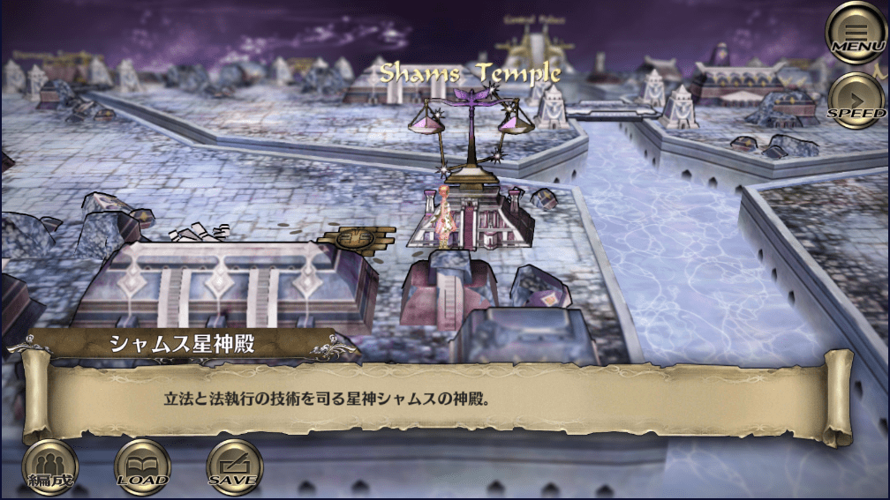
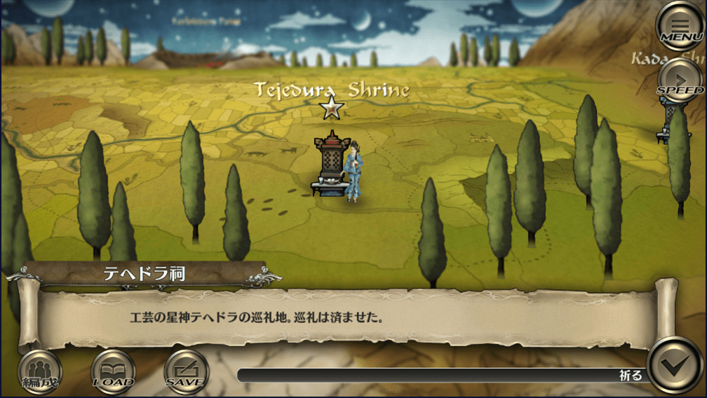
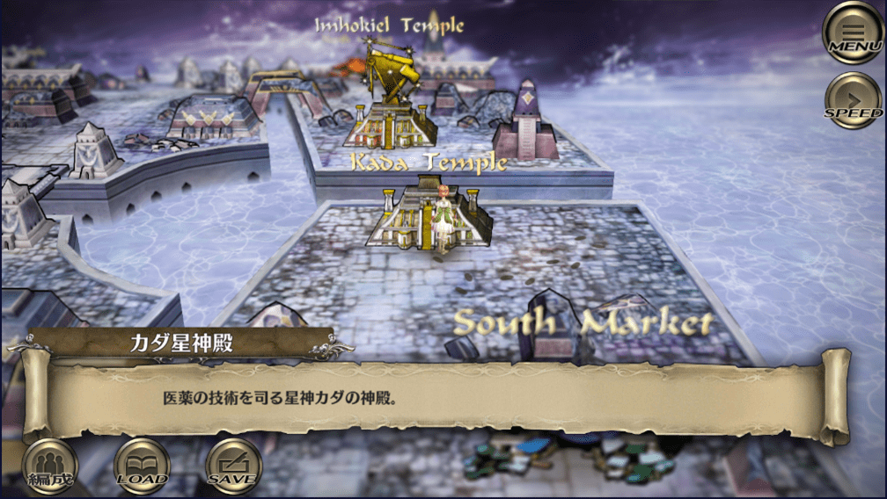
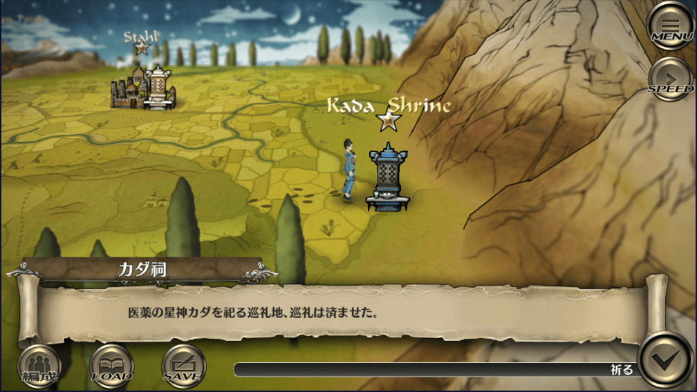
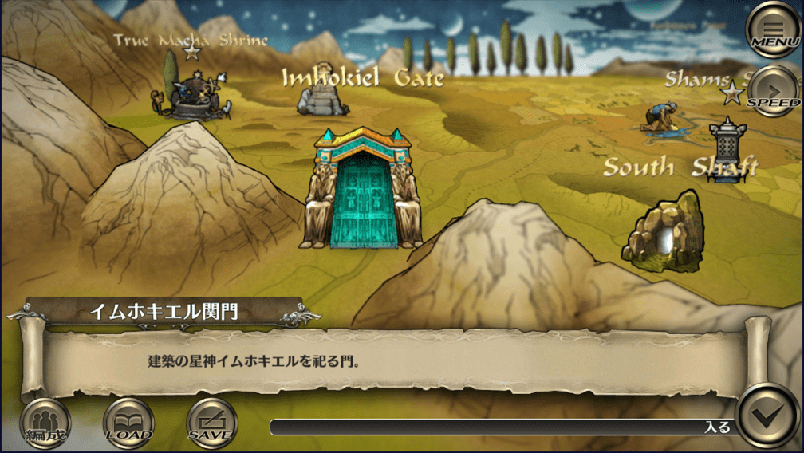

サガスカ十二星神について
星神・精霊・冥魔
サガスカは星神、精霊、冥魔を廻る物語なのですが、サガの例にもれず、ゲーム内ではあまり説明がなされていません。
各星神が何を象徴していてゲーム内でどういう扱いなのかを押さえておくことで、サガスカの物語にもある程度とっつきやすくなるかなと思ったのでこの記事を書いてみました。
#サガスカ #サガスカーレットグレイス #緋色の野望 #どんなゲーム
— 河津秋敏 (@SaGa30kawazu) June 22, 2018
その19. 星神・精霊・冥魔
この世界では神々は星界にいると信じられています。星神と呼ばれます。また世界の様々な力は五つの精霊に由来すると理解されています。悪い事が起きるのは様々な冥魔の仕業です。 pic.twitter.com/e4ziwY56pw
恩寵について
こっちの方が詳しそうなので書き換えるこれも参考
これはヤクサルトについて
| 星神の名前 | 恩寵 | 恩寵の内容 |
|---|---|---|
| シャムス神(法律) | シャムスの裁定 | 敵が大技を使おうとすると、スタンさせてくれる |
| ディーマージュ神(航海) | ディーマージュの嘆き | 敵側が連撃で攻めてくると、ダメージを与え混乱させる |
| マリガン神(武術) | マリガンの狂騒 | 劣勢の時に全体攻撃をする |
| テヘドラ神(工芸) | テヘドラの抱擁 | デバフを受けているとHPともども回復してくれる |
| アシュテール神(農業) | アシュテールの慈愛 | 状態異常を受けているとHPともども回復してくれる |
| カダ神(医薬) | カダの癒し | 大ダメージを受け、敵側に余裕まであると、HPを一気に回復してくれる |
| アダマス神(鍛冶) | アダマスの支援 | 敵が硬いと攻撃力を上げる |
| イムホキエル神(建築) | イムホキエルの加護 | 敵の攻撃力が高いと防御力を上げて備える |
| トゥクツ神(遊牧) | トゥクツの追い風 | 素早い敵相手に、こちらの素早さを高めて対抗できるようにする |
| バートレット神(交易) | バートレットの計略 | 多勢の敵を、防御と素早さにデバフをかけて眠らせる |
| ヴァッハ神(魔術) | ヴァッハの眩耀 | HPを回復して全能力値のバフをかける。気まぐれなので他の恩寵の条件を流用して発動する |
| ウズメ神(芸術) | ウズメの激励 | 味方の行動が制限されていると、BPを最大値ともども上げて行動しやすくさせる |
シャムス神
シャムス神の由来
メソポタミアの太陽神シャマスより。法と正義の神でもあり、ハンムラビにハンムラビ法典を与えたのはシャマスという説話も。
元ネタは、メソポタミアの太陽神シャマシュ（Shamash, šamaš）。
正義の神、冥界の神、占いの神という三つの神格（？）を持つ。
正義の神
正義を司る法と裁判の守護神として崇められている。
冥界の神
二の神格は「生者を守る神」。ここでいう生者の守護神とは冥界神と同義であるが、冥界神と言っても罪人を裁くためにあるいわゆる地獄に居るような恐ろしい神のことではない。
占いの神
第三に、万物を見通すシャマシュは占いを司るとも言われる。
サガスカ内でのシャムス神
#サガスカ #サガスカーレットグレイス #緋色の野望 #どんなゲーム
— 河津秋敏 (@SaGa30kawazu) June 27, 2018
その24. 法の星神シャムス
法律によって社会の秩序を維持する技術を教えたのがシャムス神。人間だけが法を持ち(神々にさえ法はありません！)、法こそが人を人たらしめているというがシャムスを信ずる者の信念です。 pic.twitter.com/x0ytJFqdSt
アスワカン：

ヤクサルト：
| 星神の名前 | 恩寵 | 恩寵の内容 |
|---|---|---|
| シャムス神(法律) | シャムスの裁定 | 敵が大技を使おうとすると、スタンさせてくれる |
ディーマージュ神
ディーマージュ神の由来
元ネタは道教の航海の神、媽祖(まそ)。これに入水の逸話がある日本神話の弟橘姫から弟を取って弟媽祖とし強引に中国語読みしたもの。
媽祖(まそ)
媽祖（まそ）は、航海・漁業の守護神として、中国沿海部を中心に信仰を集める道教の女神。
媽祖は宋代に実在した官吏の娘、黙娘が神となったものであるとされている。黙娘は建隆元年（960年）、興化軍莆田県湄州島の都巡林愿の六女として生まれた。幼少の頃から才気煥発で信仰心も篤かったが、16歳の頃に神通力を得て村人の病を治すなどの奇跡を起こし「通賢霊女」と呼ばれ崇められた。しかし28歳の時に父が海難に遭い行方知れずとなる。これに悲嘆した黙娘は旅立ち、その後、峨嵋山の山頂で仙人に誘われ神となったという伝承が伝わっている。
なお、父を探しに船を出し遭難したという伝承もある。福建連江県にある媽祖島（馬祖列島、現在の南竿島とされる）に黙娘の遺体が打ち上げられたという伝承が残り、列島の名前の由来ともなっている。
参考
サガスカ内でのディーマージュ神
アスワカン：

ヤクサルト：
#サガスカ #サガスカーレットグレイス #緋色の野望 #どんなゲーム
— 河津秋敏 (@SaGa30kawazu) July 3, 2018
その30. 航海の星神ディーマージュ
船を建造し、操る技術。星を観測し、航路を定める技術。港や燈台を築き、航海を安全にする技術。荷物や人を運び交易や交流をする技術。それら全てを与えたのが女神ディーマージュです。 pic.twitter.com/CK2ZOrwM0w
| 星神の名前 | 恩寵 | 恩寵の内容 |
|---|---|---|
| ディーマージュ神(航海) | ディーマージュの嘆き | 敵側が連撃で攻めてくると、ダメージを与え混乱させる |
マリガン神
マリガン神の由来
ケルト神話の戦争の神モリガンとローマ神話のマルスを足したもの。
モリガン
モリガン（Mórrígan）とは、北アイルランド（アルスター地方）の、破壊、殺戳、戦いの勝利をもたらす戦争の女神。モリグー（Morrígu）、またはモーリアン（Morríghan）とも。支配や権力を神の姿にした存在だと考えられており、予知と魔術で戦いの勝敗を支配するケルト神話の戦女神の一柱。
参考
マルス
マールス（ラテン語：Mārs) は、ローマ神話における戦と農耕の神。日本語では「マルス」や「マーズ」と呼ばれる。英語読みは「マーズ」(Mars)である。
元の名はマーウォルス（マウォルス、Māvors）であるらしく、また、マーメルス（マメルス、Māmers）とも呼ばれていた。
ギリシア神話のアレースと同一視され、軍神としてグラディーウゥス（グラディウス、Gradīvus、「進軍する者」の意）という異称でも呼ばれる。しかし、疫病神のように思われて全く良い神話のないアレースに対し、マールスは勇敢な戦士、青年の理想像として慕われ、主神並みに篤く崇拝された重要な神である。聖獣は狼、聖鳥はキツツキである。
参考
サガスカ内でのマリガン神
アスワカン：
ヤクサルト：
#サガスカ #サガスカーレットグレイス #緋色の野望 #どんなゲーム
— 河津秋敏 (@SaGa30kawazu) June 24, 2018
その21. 戦技の星神マリガン
戦闘及び戦争の技術を人に与えた星神です。その星座は複数の様々な武器だと言われますが、ユラニウス家では二刀を構えたマリガン神の姿だと解釈されています。十二星神で最も力ある神だと言う人もいます pic.twitter.com/Vd1tXSpqvc
| 星神の名前 | 恩寵 | 恩寵の内容 |
|---|---|---|
| マリガン神(武術) | マリガンの狂騒 | 劣勢の時に全体攻撃をする |
ヴァッハ神
ヴァッハ神の由来
マリガン神の元ネタであるモリガンの妹ヴァハから。
モリガン
マリガン神の項目： モリガン 参照
モリガンの妹ヴァハ
マッハ（Macha）は、ケルト神話に伝わる戦いの三女神の一柱。正確には古アイルランド語でヴァハと呼ばれ、その名は「戦」、または「怒り」を意味する。 「赤い鬣（たてがみ）のマッハ（Macha Mong Ruad）」または「赤毛のマッハ（Macha Dearg）」と呼ばれることもある。
馬、戦い、豊饒、および主権を司ると言われる。赤い髪に真っ赤なドレスとマントに身を包み、赤い一本足の馬に引かせた戦車で戦場を駆け巡り、戦士達を戦闘の狂気の渦へ導くとされている。モリガンが魔法の他に槍を用いて戦うのに対し、マッハは常に魔法のみを用いて戦う。戦死者の首を食べるとされ、敵の首を門に飾るケルトの風習は「ヴァハの木の実の餌」と呼ばれ、彼女への供物だといわれている。
参考
サガスカ内でのヴァッハ神
アスワカン：
ヤクサルト：
※Macha Temple / Macha Shrine と表記されている。ケルト神話内ではマッハ（Macha）と表記され、古アイルランド語でヴァハと呼ばれている。（？？？？）
#サガスカ #サガスカーレットグレイス #緋色の野望 #どんなゲーム
— 河津秋敏 (@SaGa30kawazu) June 25, 2018
その22. 魔術の星神ヴァッハ
華麗に白黒赤青黄の五精霊を操る魔術の女神様です。五精霊を表す星が星座を象り、精霊のバランスが崩れると星の明るさが変わると言われています。無骨な武神マリガンとは仲が良くありません。 pic.twitter.com/nBZCZgUZ1d
| 星神の名前 | 恩寵 | 恩寵の内容 |
|---|---|---|
| ヴァッハ神(魔術) | ヴァッハの眩耀 | HPを回復して全能力値のバフをかける。気まぐれなので他の恩寵の条件を流用して発動する |
テヘドラ神
テヘドラ神の由来
「機織り」のスペイン語読みから。
サガスカ内でのテヘドラ神
アスワカン：なし
ヤクサルト：

#サガスカ #サガスカーレットグレイス #緋色の野望 #どんなゲーム
— 河津秋敏 (@SaGa30kawazu) July 10, 2018
その37. 工芸と機織の星神テヘドラ
木工や機織り、細かい手仕事による工芸を教えた星神です。ウズメと並ぶ芸術の女神でもありますが、より実用性の高い物を好むようです。完成するまで仕事を覗かれるのを嫌がるという話もあります。 pic.twitter.com/tA0oeRxEsD
| 星神の名前 | 恩寵 | 恩寵の内容 |
|---|---|---|
| テヘドラ神(工芸) | テヘドラの抱擁 | デバフを受けているとHPともども回復してくれる |
アシュテール神
アシュテール神の由来
大地神アスタルトから。
大地神アスタルト
アスタルト (‘ṯtrt [‘aṯtart])は、地中海世界各地で広く崇められたセム系の豊穣多産の女神。崇拝地はビュブロス（Byblos、現在のレバノン）などが知られる。 メソポタミア神話のイナンナ、イシュタル、ギリシア神話のアプロディーテーなどと起源を同じくする女神と考えられ、また周辺地域のさまざまな女神と習合している。
参考
サガスカ内でのアシュテール神
アスワカン：
ヤクサルト：
#サガスカ #サガスカーレットグレイス #緋色の野望 #どんなゲーム
— 河津秋敏 (@SaGa30kawazu) July 1, 2018
その28. 農業の星神アシュテール
大地を耕し、土地を肥やし、穀物や果物や野菜を収穫し、さらに発酵その他の方法で保存したり価値を高めたりする方法全てを教えた女神です。帝国全土で崇められ、感謝される星神です。 pic.twitter.com/xCL7nCEBst
| 星神の名前 | 恩寵 | 恩寵の内容 |
|---|---|---|
| アシュテール神(農業) | アシュテールの慈愛 | 状態異常を受けているとHPともども回復してくれる |
カダ神
カダ神の由来
三国時代に実在した医師、華佗から。
カダ神の一般論
華佗は、中国後漢末期の薬学・鍼灸に非凡な才能を持つ伝説的な医師。字は元化。諱は不明。本籍は豫州沛国譙県（現在の安徽省亳州市譙城区。また河南省永城市という説もある）。「華陀」とも書く。高き医徳を積みつつも権力に屈する事を拒んだ事から非業の死を遂げたとされる。
参考
サガスカ内でのカダ神
アスワカン：

ヤクサルト：

#サガスカ #サガスカーレットグレイス #緋色の野望 #どんなゲーム
— 河津秋敏 (@SaGa30kawazu) July 6, 2018
その33. 医薬の星神カダ
薬草の知識や医療の技術を教えた神です。カダ神の教えは、体の力を高めてケガや病気に強くなる事が基本で、薬や手術で無理に治すものではありません。ましてや不老不死などは、星神の教えに反するものです。 pic.twitter.com/fKnCsD2QEq
| 星神の名前 | 恩寵 | 恩寵の内容 |
|---|---|---|
| カダ神(医薬) | カダの癒し | 大ダメージを受け、敵側に余裕まであると、HPを一気に回復してくれる |
アダマス神
アダマス神の由来
ラテン語で鉄鋼やダイヤモンドの意味を持つAdamasから。ニュアンスとしては「硬い」ということで、アダマンタイトの語源にもなっている。
サガスカ内でのアダマス神
アスワカン：なし
ヤクサルト：
#サガスカ #サガスカーレットグレイス #緋色の野望 #どんなゲーム
— 河津秋敏 (@SaGa30kawazu) July 9, 2018
その36. 鍛冶の星神アダマス
鉱石の採掘から精錬、様々な道具の鍛造まで全てを教えた星神です。武器や防具だけでなく、農具や調理器具まで、金属製品による恩恵は全ての人に及びます。しかし、さほど人気が無いのは何故でしょうか。 pic.twitter.com/pZIuCtu9xl
| 星神の名前 | 恩寵 | 恩寵の内容 |
|---|---|---|
| アダマス神(鍛冶) | アダマスの支援 | 敵が硬いと攻撃力を上げる |
イムホキエル神
イムホキエルの由来
ピラミッドを建造した古代エジプトのイムホテプ+旧約聖書で神殿再建を行ったエゼキエル。
イムホテプ
イムホテプ (Imhotep, Immutef, Im-hotep, Ii-em-Hotep, Imuthes) は、古代エジプトの高級神官。第3王朝のファラオのジェセルに仕えた宰相で、第3王朝最後のフニの時代まで活躍したとされる。
トートの神官であり、祭儀文朗読神官長の地位にあったが、ナイル川が7年にわたって氾濫せず、深刻な飢饉が発生した際、ジェセルからどうすべきか下問されたところ、ナイル川の水源の主であるクヌムの神殿に土地を寄進すれば再びナイル川は氾濫するであろう、と答えたと記す古代文書が発見されている。
また、史上初のピラミッドといわれる、ジェセル王のピラミッドを設計したことでも知られる。建築家としてのみならず、内科医としても優れ、死後には「知恵、医術と魔法の神」として神格化され、ギリシャの医神アスクレーピオスと同一視された。
イムホテプはメソポタミア出身という説がある。
ジェセル王のピラミッドのそばには、名を記念したイムホテプ博物館がある。
ハムナプトラ/失われた砂漠の都をはじめとしたシリーズに「イムホテップ」という名の神官が登場する。
参考
エゼキエル
エゼキエルは、旧約聖書に登場する紀元前6世紀頃のバビロン捕囚時代におけるユダヤ人の預言者である。
参考
サガスカ内でのイムホキエル神
#サガスカ #サガスカーレットグレイス #緋色の野望 #どんなゲーム
— 河津秋敏 (@SaGa30kawazu) June 28, 2018
その25. 建築の星神イムホキエル
測量や幾何学から石や木材を切り出し運搬する技術、そして実際の建物や道路などを作り上げる土木・建築術まで、必要な全ての技術を人に与えた星神です。建築無くして人の生活無し、が信者の口癖です pic.twitter.com/HxiQkwdRwd
アスワカン：
ヤクサルト：

| 星神の名前 | 恩寵 | 恩寵の内容 |
|---|---|---|
| イムホキエル神(建築) | イムホキエルの加護 | 敵の攻撃力が高いと防御力を上げて備える |
トゥクツ神
トゥクツ神の由来
遊牧民族「突厥」から。
突厥（とっけつ、とっくつ）
突厥（とっけつ、とっくつ）は、6世紀に中央ユーラシアに存在したテュルク系遊牧国家。もともとはジュンガル盆地北部からトルファン北方の山麓にかけて住んでいた部族で、柔然の隷属の下でアルタイ山脈の南麓へ移住させられ鍛鉄奴隷として鉄工に従事したが、552年に柔然から独立すると、部族連合である突厥可汗国（突厥帝国などと呼ばれることもある）を建て、中央ユーラシアの覇者となる。582年には内紛によって東西に分裂した。
参考
#サガスカ #サガスカーレットグレイス #緋色の野望 #どんなゲーム
— 河津秋敏 (@SaGa30kawazu) June 30, 2018
その27. 牧畜の星神トゥクツ
動物と共に暮らし、動物の恵みを活かす技術を人に与えた星神です。肉や乳を食すだけでなく、皮や骨を加工して様々な道具を作り出す技術は、帝国にとって欠かせないものでした。 pic.twitter.com/zMm2vVpgm7
アスワカン：なし
ヤクサルト：
| 星神の名前 | 恩寵 | 恩寵の内容 |
|---|---|---|
| トゥクツ神(遊牧) | トゥクツの追い風 | 素早い敵相手に、こちらの素早さを高めて対抗できるようにする |
バートレット神
バートレット神の由来
元ネタはギリシャ神話の商業神ヘルメス。これに対応するローマ神話のメルクリウス(マーキュリー)から、アメリカの有人宇宙飛行計画であるマーキュリー計画に参加したマーキュリー・セブンの一人、アラン・バートレット・シェパードのミドルネームを取った。星神だけに宇宙飛行士ということだろうか。分かるかこんなの。
商業神ヘルメス
ヘルメース（古希: Ἑρμῆς、古代ギリシア語ラテン翻字: Hermēs）は、ギリシア神話に登場する青年神である。長母音を省略してヘルメスとも表記される。
オリュンポス十二神の一人。神々の伝令使、とりわけゼウスの使いであり、旅人、商人などの守護神である。能弁、境界、体育技能、発明、策略、夢と眠りの神、死出の旅路の案内者などとも言われ、多面的な性格を持つ神である。その聖鳥は朱鷺および雄鶏。幸運と富を司り、狡知に富み詐術に長けた計略の神、早足で駆ける者、牧畜、盗人、賭博、商人、交易、交通、道路、市場、競技、体育などの神であるとともに、雄弁と音楽の神であり、竪琴、笛、数、アルファベット、天文学、度量衡などを発明し、火の起こし方を発見した知恵者とされた。プロメーテウスと並んでギリシア神話のトリックスター的存在であり、文化英雄としての面を有する。
参考
メルクリウス(マーキュリー)
メルクリウス (Mercurius) はローマ神話のデイ・コンセンテス (Dei Consentes) の一人であり、商人や旅人の守護神である[1]。英語読みでマーキュリー (Mercury) とも表記される。
ギリシア神話の神々の伝令使ヘルメースと同化し、雄弁家、盗賊、商人、職人の庇護者とされた。ヘルメースと融合する前の元来の職能や性格は明瞭でないが、その名は merces （商品、財貨）に関係があるとも言われる商業の神である。
参考
アラン・バートレット・シェパード
アラン・バートレット・シェパード・ジュニア（Alan Bartlett Shepard Jr.、1923年11月18日 - 1998年7月21日）は、アメリカ合衆国最初の宇宙飛行士マーキュリー・セブンの一人、アメリカ初の宇宙飛行に成功。アメリカ海軍の軍人。海軍少将。
参考
サガスカ内におけるバートレット神
アスワカン：なし
ヤクサルト：
#サガスカ #サガスカーレットグレイス #緋色の野望 #どんなゲーム
— 河津秋敏 (@SaGa30kawazu) July 4, 2018
その31. 星神バートレット
帝国道を作ったと言うこの神は、全ての旅人の神だと言われています。また、取引の神、商人の神だとも言います。さらには、盗賊や詐欺師の神でもあるとも言われています。星神は善悪を問題としないのです。 pic.twitter.com/HtpGBImVIs
| 星神の名前 | 恩寵 | 恩寵の内容 |
|---|---|---|
| バートレット神(交易) | バートレットの計略 | 多勢の敵を、防御と素早さにデバフをかけて眠らせる |
ウズメ神
ウズメ神の由来
日本神話に登場するアマノウズメより。
アマノウズメ
アメノウズメ（アマノウズメ）は、日本神話に登場する女神。
一説に別名「宮比神」（ミヤビノカミ）。大宮売神（オオミヤノメノカミ）と同一視されることもある。
『古事記』では天宇受賣命、『日本書紀』では天鈿女命と表記する（「命（みこと）」は敬称、以下同様）。神名の「ウズメ」の解釈には諸説あり、「強女（オズメ）」の意とする『古語拾遺』説、『日本書紀』の表記通り「髪飾りをした女（鈿はかんざしの意）」とする説などがある。
「岩戸隠れ」の伝説などに登場する芸能の女神であり、日本最古の踊り子と言える。
参考
「岩戸隠れ」の伝説
サガスカ内でのウズメ神
アスワカン：なし
ヤクサルト：
#サガスカ #サガスカーレットグレイス #緋色の野望 #どんなゲーム
— 河津秋敏 (@SaGa30kawazu) July 7, 2018
その34. 芸能の星神ウズメ
歌や踊りといった技術で心を豊かにするのが、星神ウズメの教えです。人に文化を与える星神の中でも、最も星神らしいと言えるのかもしれません。ウズメの神官は何故か皆美しく魅力的な人揃いです。 pic.twitter.com/17uqoVweLM
| 星神の名前 | 恩寵 | 恩寵の内容 |
|---|---|---|
| ウズメ神(芸術) | ウズメの激励 | 味方の行動が制限されていると、BPを最大値ともども上げて行動しやすくさせる |